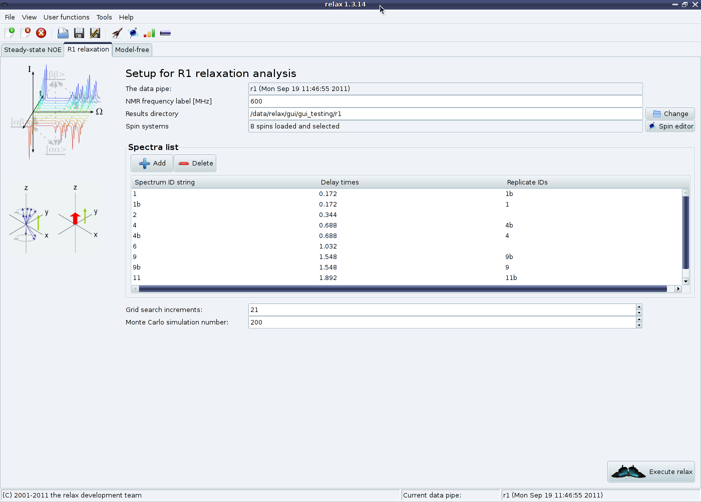
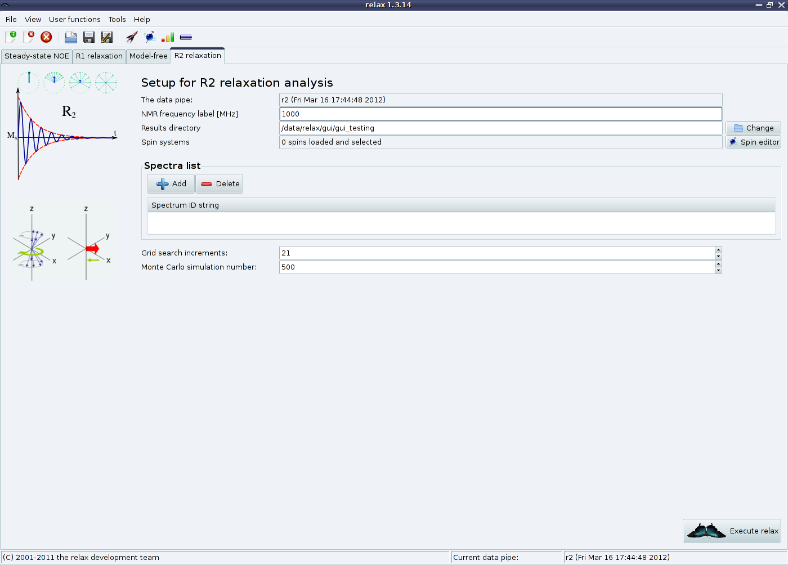
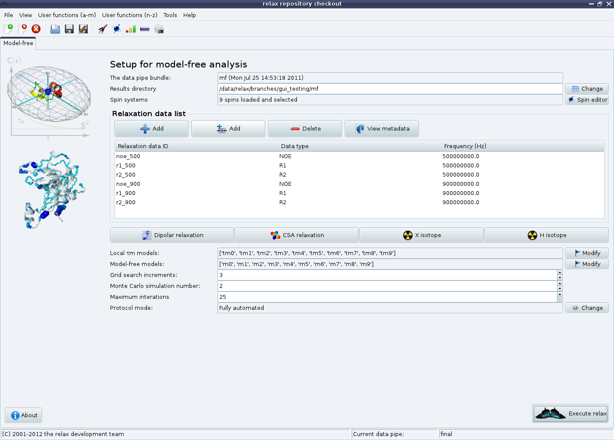
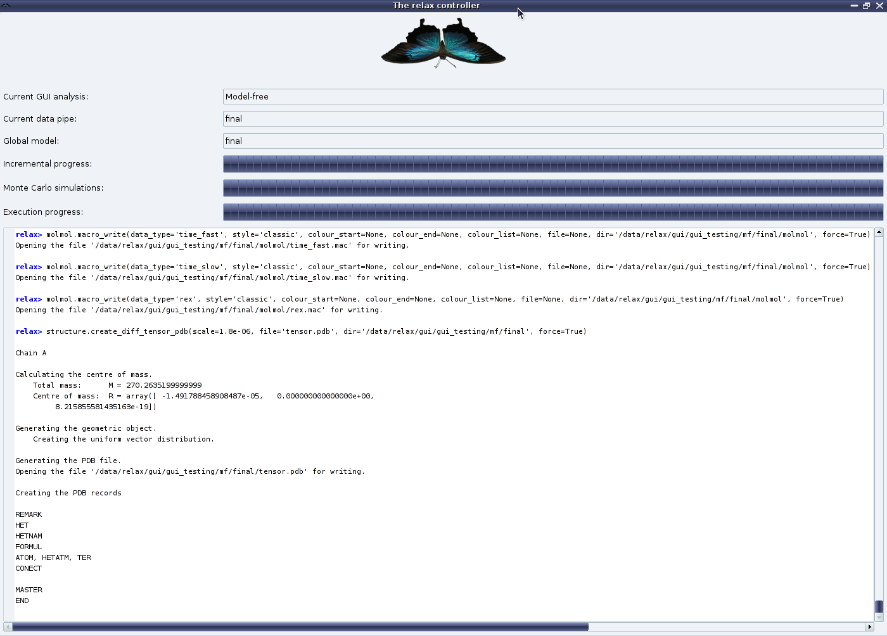
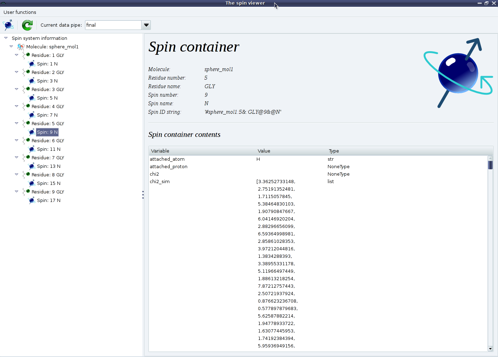
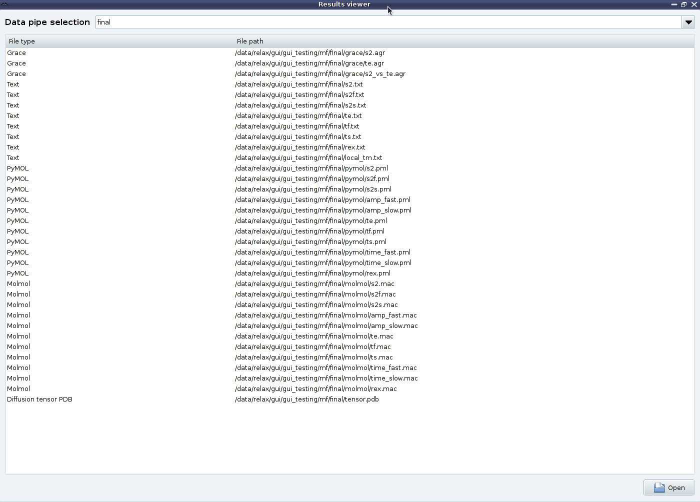
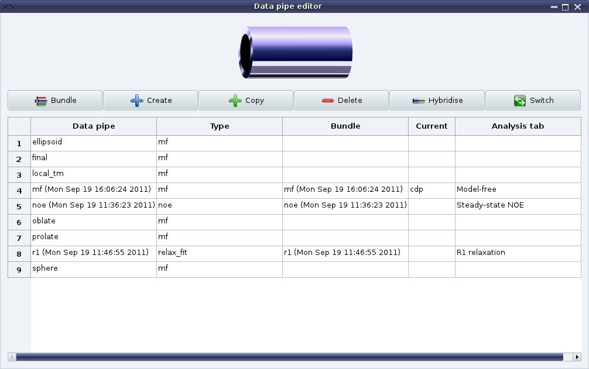
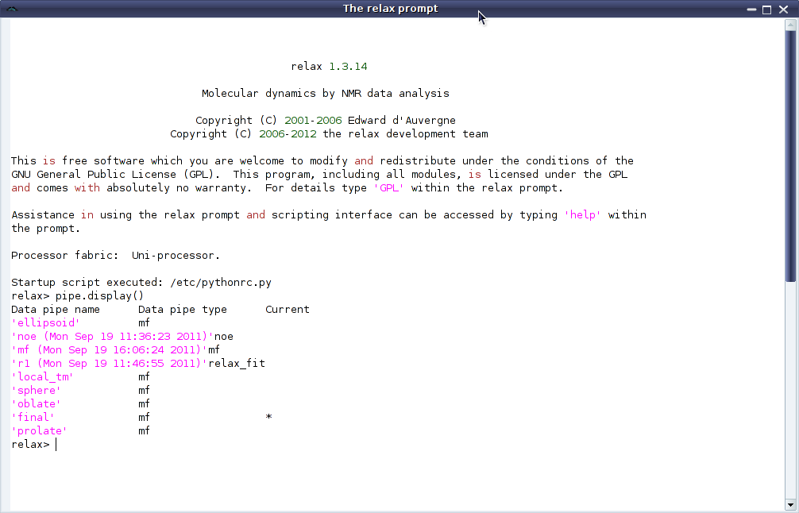

The GUI
Figure 1.6:
Screenshot of the relax GUI interface - the
R1 analysis.
|

|
Figure 1.7:
Screenshot of the relax GUI interface - the
R2 analysis.
|

|
If the wxPython module is installed on your system, you will have access to the GUI interface of relax.
To launch relax in GUI mode, type either
or
In most cases you will probably like to have a permanent copy of all the messages, warnings, and errors relax produces for future reference.
In such a case you could run the GUI with:
This will place all of the output into the log file.
Figure 1.8:
Screenshot of the relax GUI interface - the automated model-free analysis.
The analysis is fully automated via a new model-free protocol as described in detail in Chapter 7.
Clicking on the “About” button in the bottom left hand corner will give a full description of the protocol.
For using this interface or any of the modern-day model-free protocols, data from at least two magnetic field strengths must be without question collected.
|

|
The GUI is currently an interface to the automated analyses, providing an easy way to perform quick analyses.
The interface consists of a tab for each analysis.
By clicking on the “File→New analysis” menu entry or the “New analysis” toolbar button, the analysis wizard will appear (see Figure 1.4).
The following analyses can be set up using this wizard:
- Steady-state NOE:
- this provides access to the steady-state NOE calculation with pseudo Monte Carlo simulations for error analysis (this falls back to bootstrapping as this is a calculation rather than optimisation).
See Figure 1.5 on page
![[*]](crossref.png) .
.
-
R1 and
R2
- : these provide easy access to optimisations and error analysis for the
R1 and
R2 relaxation rates via exponential curve-fitting (see Figures 1.6 and 1.7 on pages and ).
- Model-free analysis
- : A fully automatic model-free protocol is provided in another tab.
This operates via the dauvergne_protocol module which implements the protocol of d'Auvergne and Gooley (2008c) (see Figure 1.8 on page ).
A number of windows in the GUI provide user feedback or allow for the viewing and editing of data.
These include:
Figure 1.9:
Screenshot of the relax GUI interface - the relax controller window.
The purpose of the controller is for feedback.
It shows the current analysis and current data pipe, a number of progress gauges, and the relax text output.
|

|
Figure 1.10:
Screenshot of the relax GUI interface - the spin viewer window.
This viewer is designed for easy addition and manipulation of spin systems within the relax data store.
The window is accessible via the “View→Spin viewer” menu entry, typing “[Ctrl-T]”, the spin viewer button in the toolbar, or the “spin editor” button within the auto-analysis tabs.
|

|
Figure 1.11:
Screenshot of the relax GUI interface - the results viewer window.
At the end of one of the automated analyses, a number of results files will be created.
This can include text files containing the results, 2D Grace plots of the results, PyMOL and MOLMOL macros plotting the results onto the structure, diffusion tensor objects for viewing in PyMOL, etc.
This window allows for easy opening of these results files.
|

|
Figure 1.12:
Screenshot of the relax GUI interface - the pipe editor window.
One analysis may consist of one or more data pipes.
And each analysis has its own unique set of data pipes.
This editor allows for the easy manipulation of data pipes for advanced users.
|

|
Figure 1.13:
Screenshot of the relax GUI interface - the prompt window.
This window mimics relax in the prompt user interface mode, and provides the full power of the prompt/script UI modes within the GUI.
|

|
- The relax controller
- : This window shows the progress of relax's execution and displays relax's text output for checking if the analysis has been performed correctly and has completed successfully (see Figure 1.9).
- Spin viewer window
- : This is used to load spins system information into the relax data store and to see the contents of the spin containers (see Figure 1.10).
- Results viewer window
- : This presents a list of the results files which can be opened by double clicking for visualisation using a text editor, Grace, PyMOL, MOLMOL, etc (see Figure 1.11).
- Data pipe editor
- : This window allows for easy manipulation of the data pipes of the relax data store (see Figure 1.12).
- The relax prompt
- : This window gives access to the relax prompt (see Figure 1.13).
The relax user manual (PDF), created 2019-03-08.